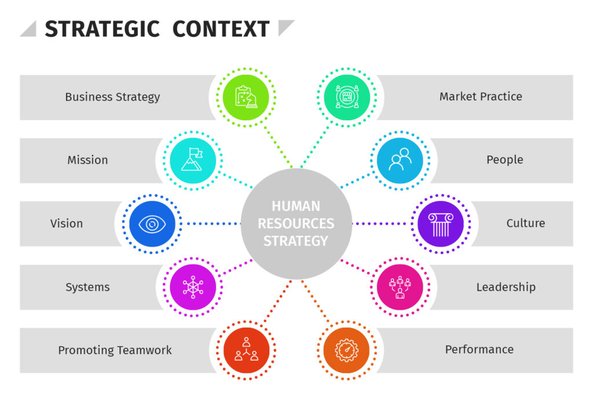

Une analyse de certains sujets tombés ces dernières années.
Prédire des sujets à venir en imaginant à l'avance comment traiter votre futur sujet.
Huit sujets, une seule question de fond.
- 2023What issues need to be addressed regarding the organization of companies in a changing world?
- 2023To what extent does hybrid work represent a challenge for managers?
- 2023How have managerial strategies evolved in recent years?
- 2024What issues concerning management and human resources need to be addressed?
- 2024What role may AI play in Human Resources Management?
- 2024To what extent is cultural knowledge important in a globalized business world?
- 2025How has management been evolving since the Pandemic?
- 2025What is the impact of employee monitoring in the workplace?
Adapting people management to a changed world: the most recurrent theme of the exam
This is the richest theme of the exam, with eight subjects, and it is also the most repetitive. Hybrid work, managerial strategies, HR issues, AI in HR, cultural knowledge, management since the pandemic and employee monitoring all explore the same question: how must management and organisation adapt to a world of work that has changed for good? Once a candidate sees this single thread, the eight questions become variations on one well-prepared answer.
The first recurring angle is the shift caused by the pandemic. Several texts start from the same fact: remote and hybrid work have become normal, and employees now expect flexibility. The key knowledge is the difference between full-time office work, remote work and hybrid models, and the reasons behind the change. The reusable argument is that flexibility is now a powerful tool to attract and keep talent, but that it creates new challenges for managers.
The second recurring angle is the tension between flexibility and cohesion. When teams rarely meet, communication slows, the sense of belonging weakens and younger workers miss informal learning. The useful position is that managers must set clear rules, such as which days require presence and how performance is measured, in order to give freedom without losing unity.
The third recurring angle is wellbeing. The HR question, based on a text about stress and burnout, shows that mental health is now a management issue. The key ideas are burnout, work-life balance and the blurring of the line between professional and private life when people work from home. The reusable argument is that wellbeing is not a luxury: tired, anxious employees are less productive and more likely to leave, so good managers watch for stress and build a culture where asking for help is accepted.

The fourth recurring angle is trust versus control. The 2025 question on employee monitoring captures it perfectly. When managers cannot see their teams, some install surveillance software, but this often backfires, signalling distrust and pushing people to look busy rather than to deliver results. The useful position is management by objectives: judging employees on what they achieve, not on hours of activity. Trust, supported by clear goals, usually beats control.
The fifth recurring angle is technology in HR. AI can sort applications, identify skills gaps and predict who might leave. Used well it makes HR fairer and faster; used carelessly it reproduces bias and reduces people to data points. The reusable argument is that AI should support managers, not replace the human relationship at the heart of good management.
The sixth recurring angle is culture. As teams become more international and more remote, managers lead people from different backgrounds and time zones. Cultural knowledge, once a nice extra, is now a core skill, because understanding how colleagues communicate and view authority prevents misunderstanding and builds stronger global teams.
What unites all these angles is a clear evolution: management is moving away from authority and physical presence towards communication, empathy, trust and clarity. The most respected managers explain the purpose of the work, set clear expectations, give regular feedback and stay close to their teams, in person or online. Some experts even revive the old idea of management by walking around, adapted to the digital age.
To answer any question in this theme, a few reflexes help. Start from the changed world of work after the pandemic. Identify the tension at stake: flexibility against cohesion, wellbeing against performance, or trust against control. Present both sides, then defend a people-centred approach based on trust and communication. Mention AI and culture where relevant. With this single, flexible base, the most frequent theme of the exam becomes the most predictable.